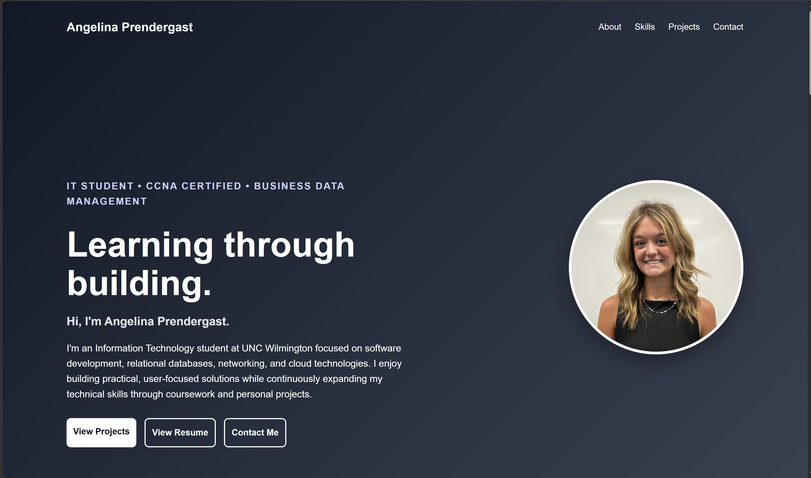
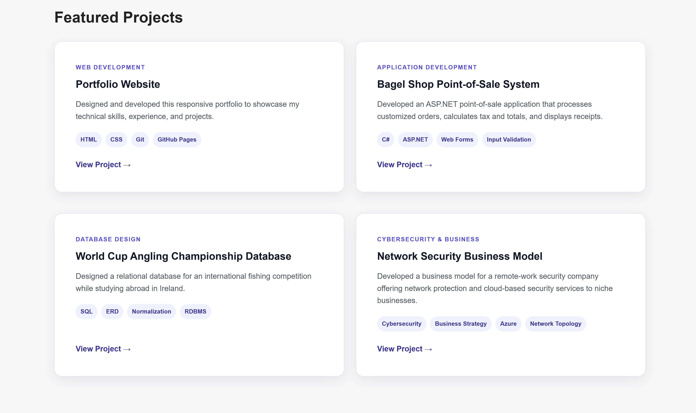
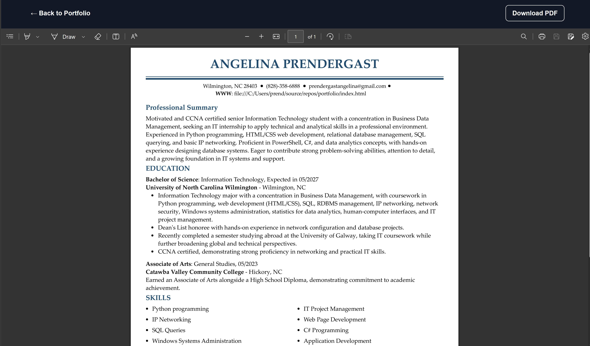
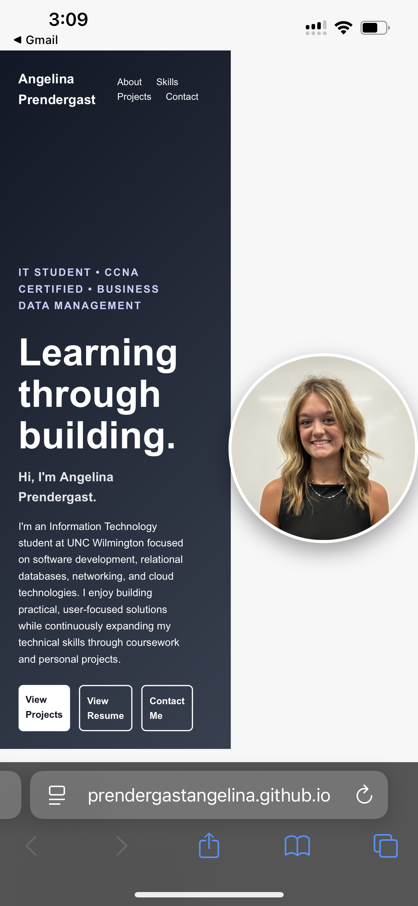

Web Development
Portfolio Website
A responsive personal portfolio designed to present my education, technical skills, experience, and projects to internship recruiters and potential employers.
Project Overview
I created this portfolio website to establish a professional online presence and provide one central place where recruiters, employers, and other visitors can learn more about my education, technical background, experience, and projects. Rather than relying only on a resume, I wanted to build a website that would allow me to present my work in greater detail, explain the skills I used, and continue updating my professional profile as I gain new experience throughout my education and career.
Technologies Used
Key Features
The website includes a responsive navigation menu, an introductory hero section, categorized technical skills, and featured project cards that connect to individual project pages. It also includes a dedicated resume section where visitors can either view my resume online or download a PDF copy, along with contact information and links to my GitHub profile. The layout was designed to be clear, easy to navigate, and consistent across the homepage, resume viewer, and project pages.
What I Learned
Building this website gave me hands-on experience with the full process of creating and publishing a web project. I strengthened my HTML and CSS skills while learning how to organize files, create reusable page layouts, manage relative file paths, and design a responsive interface. I also learned how to use Git and GitHub to track changes, create commits, push updates, troubleshoot repository issues, and publish a live website through GitHub pages. Most importantly, the project helped me become more confident working independently, debugging problems, and making design decisions based on the experience of the person visiting the site.
Project Gallery
The gallery below highlights the main sections of the portfolio, its responsive layout, and selected examples of the HTML and CSS used to build it.

Portfolio Homepage
The homepage introduces my background, technical interests, and featured work while providing quick access to my resume and contact information.

Projects and Technical Experience
Project cards and technical experience sections organize my work into clear, easy-to-scan categories.

Resume Integration
Visitors can view my resume directly in the browser or download a PDF copy.

Responsive Design
The layout adapts for smaller screens so navigation, project cards, and content remain readable on mobile devices.